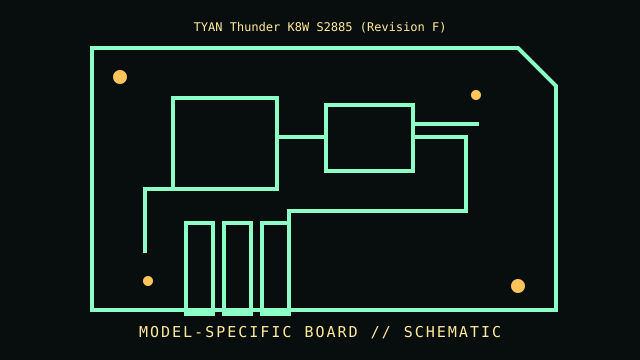

[ INDIVIDUAL COMPONENT // MOTHERBOARDS ]
TYAN Thunder K8W S2885 (Revision F)
Dual Socket 940 / AMD-8000 platform, 2003–2005. This entry documents one exact board model/revision; its specifications are not interchangeable with similarly named variants.

REVISION WARNING: Confirm the PCB silk-screen, assembly/AA code and firmware ID on the actual board. Where documentation does not identify one PCB spin, this record states the exact documented model and explains the revision distinction below.
Specifications
| Exact model / revision | S2885 Thunder K8W revision F |
|---|---|
| CPU / socket | Two Socket 940 Opteron processors; compatible model/stepping depends on board revision and BIOS |
| Chipset / platform | AMD-8131 PCI-X tunnel, AMD-8111 I/O hub and AMD-8151 AGP tunnel |
| Memory | Eight registered ECC DDR DIMM sockets in processor-local banks; supported speed/capacity depends on CPU, rank and population |
| Form factor | SSI EEB server/workstation board; verify chassis standoff pattern and I/O shield |
| I/O and expansion | AGP Pro 8x, PCI-X and PCI slots; legacy IDE/floppy, onboard network/storage and server headers |
| Firmware compatibility | TYAN BIOS, BMC/management firmware where fitted; BIOS version, CPU stepping and paired-memory arrangement require manual verification |
Compatibility and revision pitfalls
S2885 model suffix and PCB revision define the manual; do not use the similar S2881/S2882 record. Socket 940 Opterons require registered ECC memory and proper matching DIMMs per CPU bank. Verify PSU auxiliary power, chassis clearance and correct BIOS before populating both sockets.
Socket fit alone is not proof of support. Confirm the manufacturer CPU support list, the board's minimum BIOS, memory population table, and exact chassis/power requirements before operation.
Preservation notes
Record both socket/CPU OPNs, memory bank layout, board revision and BIOS/BMC versions. Keep thermal duct/heatsinks and proprietary cables; inspect PCI-X connectors, VRM capacitors and server-management headers.
Record provenance, date/serial codes, board and firmware revision, known repairs and test conditions. Photograph labels and connectors before cleaning or component removal; retain original firmware and configuration data when possible.
Sources & further reading
- TYAN S2885 support and manual downloadsManufacturer support portal for the Thunder K8W S2885; select the manual and firmware for the exact board revision.
- Archived TYAN Thunder S2885 K8W driver setPreserved original S2885 driver package useful for identifying shipped platform components and software era.
Manufacturer manuals, CPU lists and archived primary documents take precedence over reseller summaries. If an archived support page omits a revision-specific file, do not assume another revision's firmware is compatible.